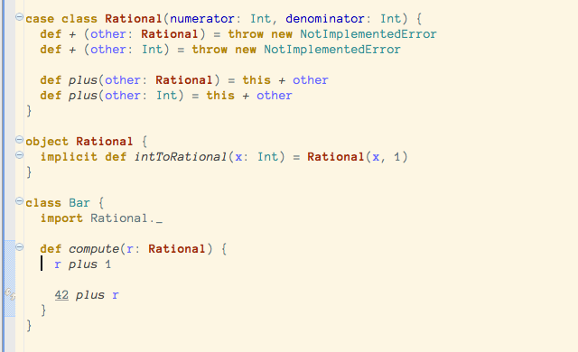
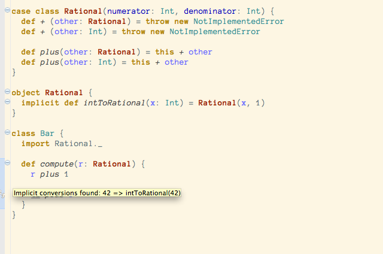

Implicit Highlighting new
Implicit annotations are a very powerful feature in Scala. They allow for fluid DSLs, an amazing collection library, or enriching existing types. With great power comes great responsability, and a desire to control. Meet Implicit Highlighting!
Implicit highlighting
We have defined a class for rational numbers, and defined an implicit comversion from integers to rationals. This way we can easily mix integers and rationals in arithmetic expressions, for instance by adding 42 with a rational number.
Notice that the number 42 is underlined, and a marker is added to the left gutter. This signals that the method plus was added through an implicit conversion. If you move your mouse over the gutter, you will see the actual conversion (intToRational).
There is also a QuickFix available (CMD-1) that makes the call the implicit conversion explicit! Check Expand Implicit Conversion for more details.

Configuration
By default, only implicit conversions are highlighted. This makes sense, since most of the times implicit values that are passed around are not too costly, nor interesting. However, if you'd like to show those as well, you can enable them from the Implicits preferences page.

Thank you
This feature was contributed by Jin Mingjian and improved by David Bernard and Mirko Stocker. Thank you!